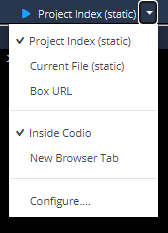
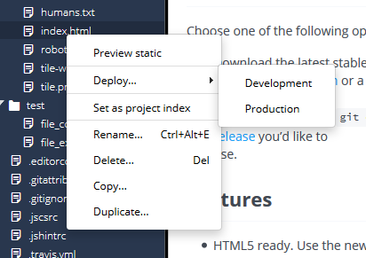

Preview¶
The Preview feature enables you to view your static and dynamic content. The menu options are configurable for both types of content:
Preview status options - Can be used for only static content (HTML, CSS, JS, and text). You can also easily preview static content on your mobile device using Project > QR Code for Preview URL to generate a QR code that you can scan with a QR reader on your device.
Preview dynamic options - To access files or services that are executed on the server (PHY, Ruby, Note, etc.), you need to use the right-most menu option.
To access your server side application, enter word1-word2-port.codio.io. This accesses your box over port 80, which is useful if your corporate firewall blocks ports other than 80 and 443.
word1-word2 is an automatically generated subdomain name for your Codio box. You can configure your application to listen on ports defined in the URL. However, Codio only supports a restricted range of ports. Refer to this section for more details (insert link).
Using preview¶
Using the Preview button lets you preview one or more web pages with a simple button press. Codio creates three default entries in the Preview menu automatically:

Project Index - this is the default file to run for your project. It can be set by right-clicking a file in the Filetree. This option should be used to preview static content (typically HTML files). For PHP, Ruby, etc., you should use the Box URL option.
Current File - whichever code file currently has focus. This option should only be used to preview static content (typically HTML files). For PHP, Ruby, etc., you should use the Box URL option.
Box URL - Use this option for previewing PHP, Ruby, or other server side languages over HTTPS. Click here <insert link> for more information on configuring port access for HTTPS.
If you right-click a file in the file tree or the tab, you can also select Preview Static.

See Apache Password Basic Authentication and HTTP Authentication with PHP for examples.
Unsecure content error¶
Codio runs over a secure connection using HTTPS, therefore so does the inline preview. If your code references an external resource such as a script, font, or image, a browser error may occur indicating that there is some form of unsecure or mixed content because you are running in a mixed HTTP/HTTPS mode. This may occur when you reference something similar to the following:
<script src="http://code.angularjs.org/1.1.5/angular.js">
The error is caused by a restriction of the browser and cannot be easily modified. It is intended to protect you from insecure content.
To avoid this from occurring:
Modify your external references to use HTTPS.
Modify your references to use the ‘current protocol’ by including ‘//’ without http or https, so <script src=”//code.angularjs.org/1.1.5/angular.js”>.
You can also download the external file to the Codio project and then reference it.